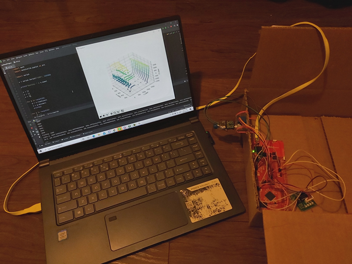
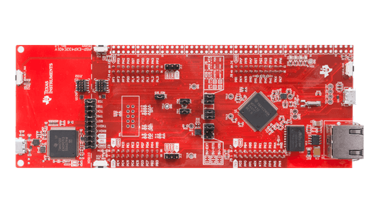
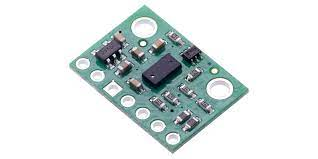
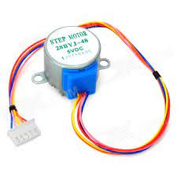
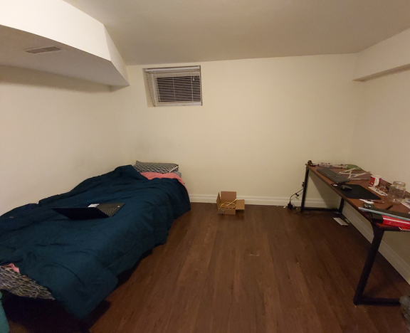
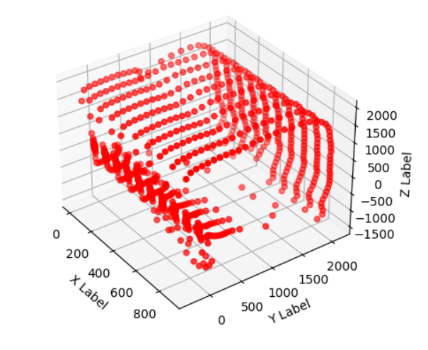
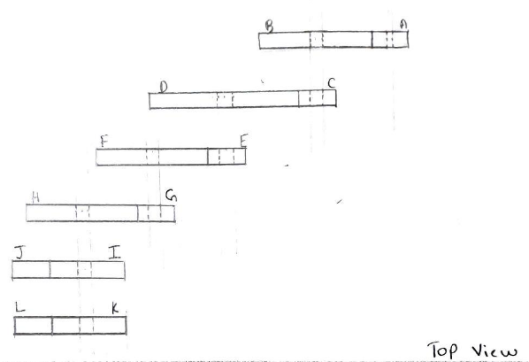
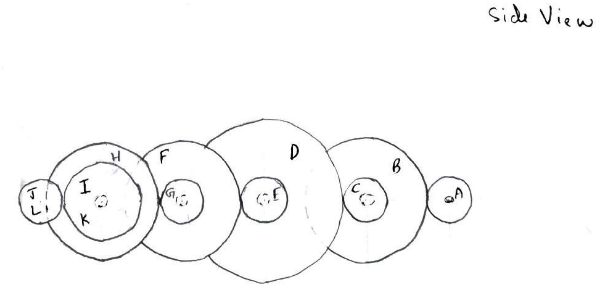
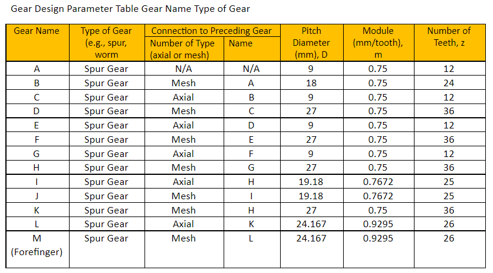
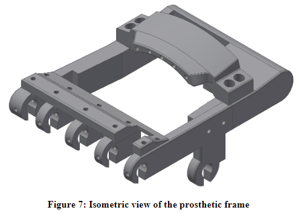

Light Detection and Ranging Device (LIDAR)
C, Assembly, Python
Device Overview
The goal is to design an apparatus that will produce a virtual, graphical representation of its environment. Here is a brief description of the project. A much more detailed process will be provided below in case you would like a complete understanding.

Physical System + PC Display
Device Components
MSP432E4 Microcontroller
- Baud Rate: 115200
- Parity: None
- Data Bits: 8
- Stop Bits: 1
VL53LIX Time of Flight Sensor & 28BYJ-48 Stepper Motor
 
The environment to be mapped for testing the LIDAR.

The final graphical representation output provided by the LIDAR of the room above.
Below I have written a very detailed description outlining all the steps from acquiring data to producing the graphical representation. All the code used in this project can be found on my Github
- The first steps include the set up and booting of the ToF sensor. 10 different success messages referring to different steps of this process are printed via serial UART communication.
- Immediately following the successful completion of step one, the stepper motor is signaled to begin spinning. It is set to spin exactly one full rotation through a for loop. Simultaneously, a variable containing the current position of the motor axle (angle) is updated with each iteration.
- An if statement within this for loop then controls when a distance measurement is taken through the ToF sensor. The system is designed to take 128 measurements every rotation, which results in one measurement every 2.8125 degrees of rotation. Thus, everytime the position variable reaches this value (which comes out to be every 4 iterations) a distance measurement is taken.
- When this if statement passes, a series of steps are performed to transmit raw, unformatted distance data via serial UART communication. The distance value is also stored within a debugging array which can be examined through an external debugger.
- Once a full rotation is completed, the motor will quickly perform a rotation in the opposite direction, for the purpose of ensuring the wiring does not tangle. Additionally, for multiple measurements, the system should be moved according to a predetermined displacement.
- Once the motor has completed its rewinding, it will immediately begin the next rotation, repeating steps 3 - 5. The number of times this step is done can be manually changed in the C code by editing the controlling for loop.
- Now working from python, a serial UART communication method is implemented for data transmission. Initially, the proper port is accessed, along with the correct baud rate.
- The first ten lines of data will reference the booting status of the ToF sensor, so these can be printed or ignored.
- Next, an outer for loop is established based on the number of measurements to be taken (similarly to the C code). Edit the range of this for loop in accordance to the number of measurements to be taken.
- This is a simplex communication. The microcontroller is only ever sending data to the external pc, and never vice versa. Additionally, Python will always be waiting for serial UART communication when asked to read data from the port. The inner for loop will then both read and decode every distance measurement being transmitted. This loop will run 128 times (the number of measurements to be taken per rotation).
- After the incoming data is decoded into an integer stored in a variable, it is then immediately converted to its corresponding rectangular coordinates and stored within lists (for the y and z points) before the next line of data is read. The formulas for the conversions are as follows: y = Distance * cos(theta), where theta is the current angle of the motor in radians. x = Distance * sin(theta), where theta is the current angle of the motor in radians.
- Finally, the displacement list is very simply hardcoded through multiple for loops and can be easily edited to match testing specifications.
A visual representation of the analog to digital conversion process carried out by the LIDAR's microcontroller.
Space Invaders Game Engine
Java, Object-Orentated Programming
A fully functional version of the classic arcade game. Some of my fondest memories as a kid relate to playing this game for hours on end trying to beat my high score. The current version was heavily stress tested for bugs and crashes making for a smooth experience every run.
Features:
The game engine was built using Java's Swing toolkit to set up the window, GUI, and gameplay loops. The overall struction applies polymoriphism through the utilization of classes, parent classes, abstract classes, inheritance, and interfaces.
Gameplay Video
A Quick demonstration of the game in action. Video is blurry due to resolution issues during recording and is much clearer when playing. The full game and code is available for download on my Github page so feel free to give it a try!
3-D Printed Prosthetic Hand
AutoCAD Inventor
Device Overview
The gripping apparatus is intented to act as a full right hand prosthesis, with the opening and closing of the fingers and thumb to be driven by a gearing mechanism that connects to a single motor. We followed a series of steps along the design process beginning with prelimary sketching.
 We then began working on a solid model assembly of our design, first creating a rigid frame, and then adding the two joints. Furthermore, we developed a simulation to ensure proper movement. Although the motor used in this design is quite fast, we were able to slow the rotations down to a precise desired level through a series of gear ratios. This was done using both axial and mesh connections, as well as various sizes of gears.
 